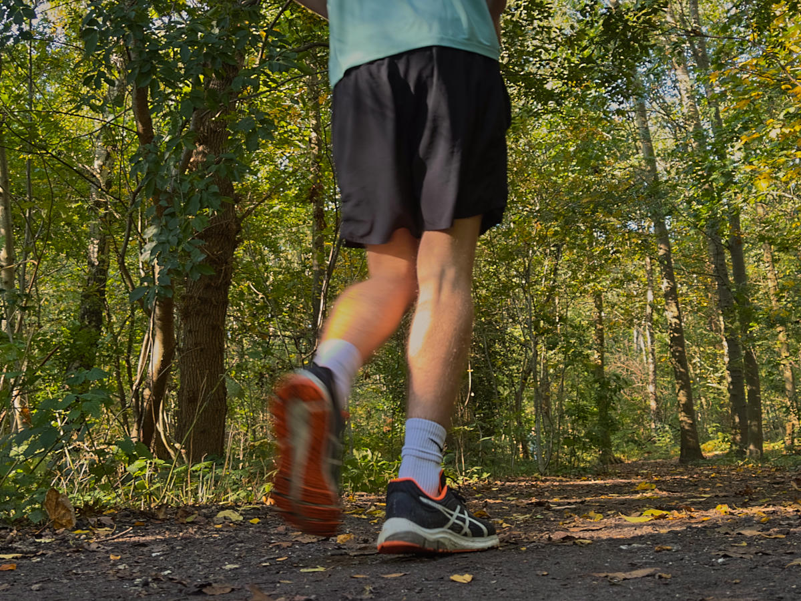

Equipment
One of the most important things is a suitable pair of shoes. You don't necessarily need "running shoes" but you do want to make sure that the shoes you choose:
- fit well (enough room for your toes to move)
- provide cushioning to absorb the impact of the ground
- are light
- are breathable
- are durable